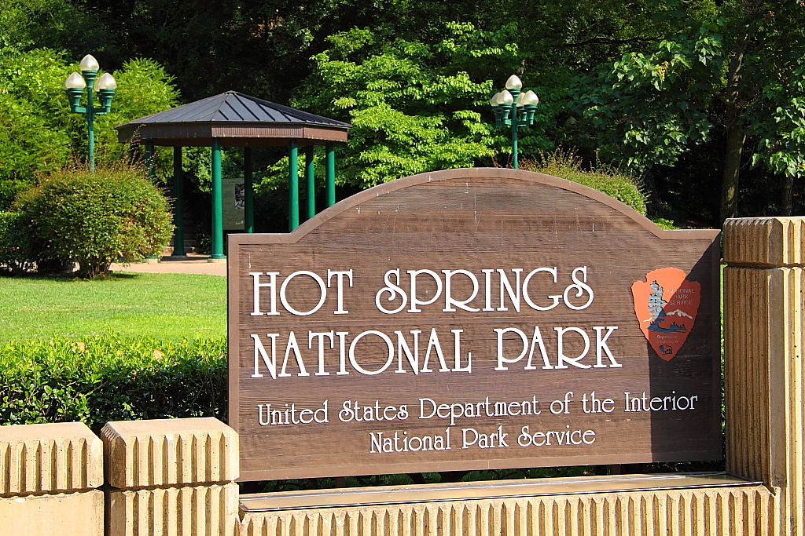

Hot Springs

Hot Springs is a unique city nestled in the Ouachita Mountains of Arkansas, famous for its natural thermal springs. The city is uniquely intertwined with Hot Springs National Park, which surrounds it.
Things to Do in Hot Springs
- Explore Bathhouse Row within Hot Springs National Park.
- Hike the scenic trails in the Ouachita Mountains.
- Take a drive up Hot Springs Mountain for panoramic views.
- Visit the Gangster Museum of America.
- Enjoy a traditional thermal bath experience.
History of Hot Springs
The thermal springs have attracted people for centuries, with Native American tribes long utilizing their healing properties. European settlement began in the early 19th century, and the town quickly grew into a renowned spa destination. The Encyclopedia of Arkansas provides a detailed history of Hot Springs. [1] Hot Springs Reservation was established in 1832, later becoming a National Park in 1921.
| Historical Event | Date | Description |
|---|---|---|
| First European Settlement | 1807 | The first permanent European settlement was established. [1] |
| Hot Springs Reservation Established | 1832 | The area was set aside by the federal government, marking the early stages of the National Park. |
| Hot Springs National Park Established | 1921 | The reservation was officially designated as a National Park. |